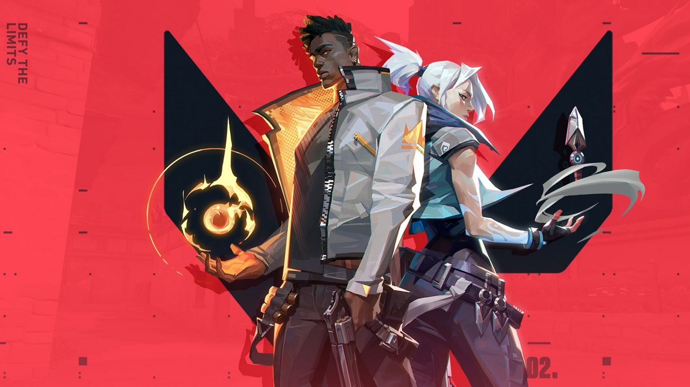

Genshin Impact
Genshin Impact adalah game yang bertemakan petualangan yang menggunakan alur story yang sangat seru dan menarik

Valorant
Valorant adalah game yang bertemakan shooter dan berbasis pvp yang menggunakan mode pandangan FPP
The Division
The division adalah game yang bertemakan apocalypse dan mengusung gameplay shooter menggunakan pandangan TPP